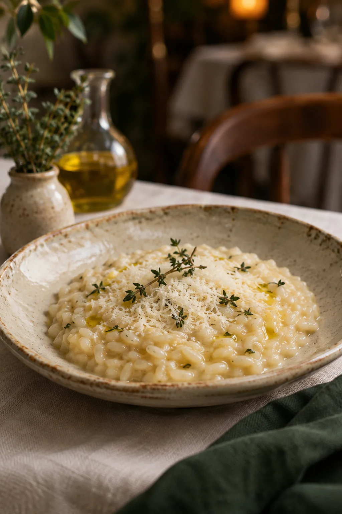
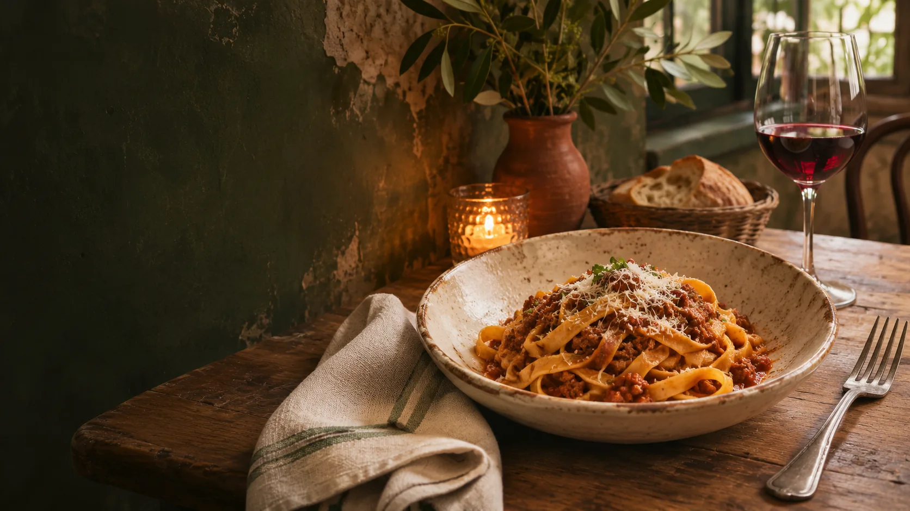
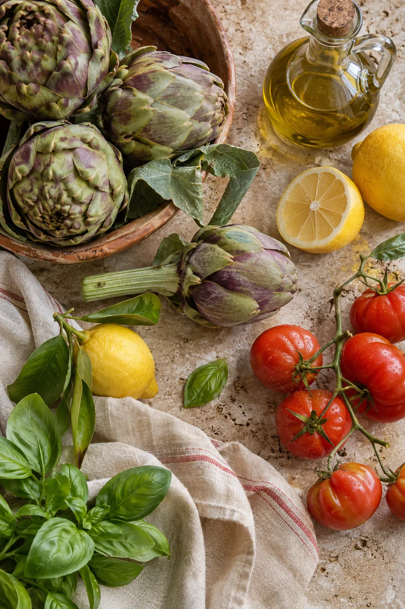
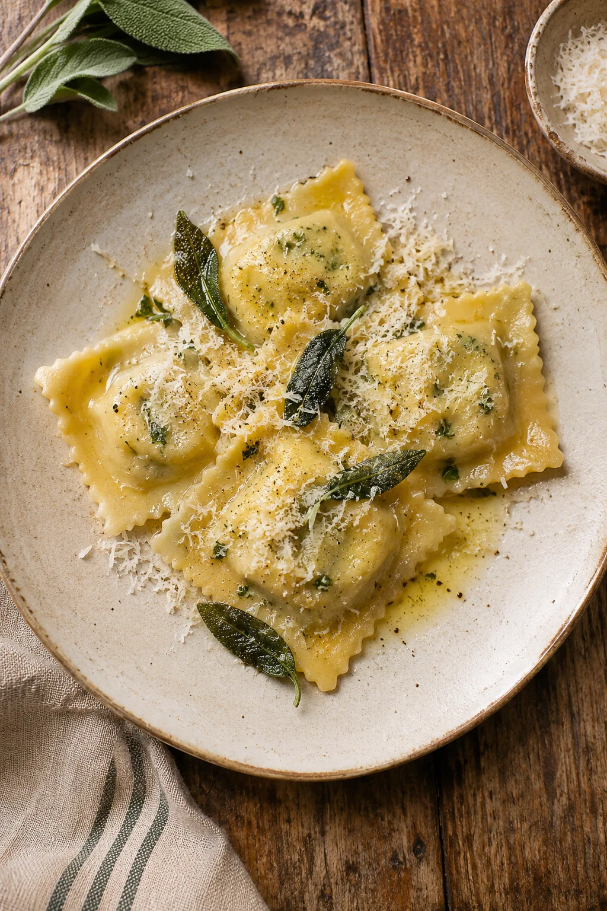
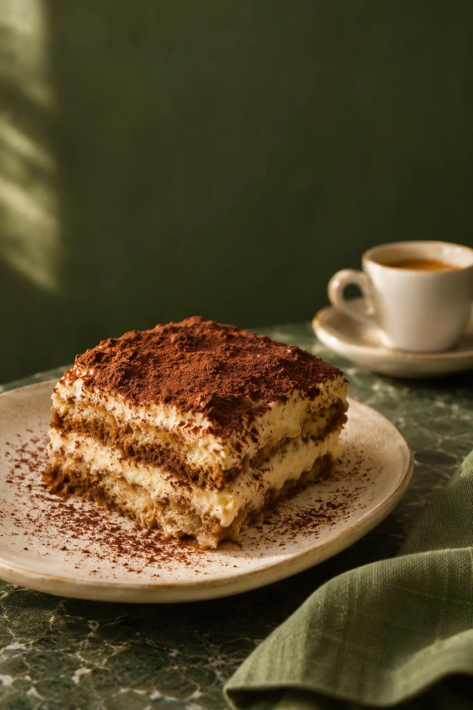
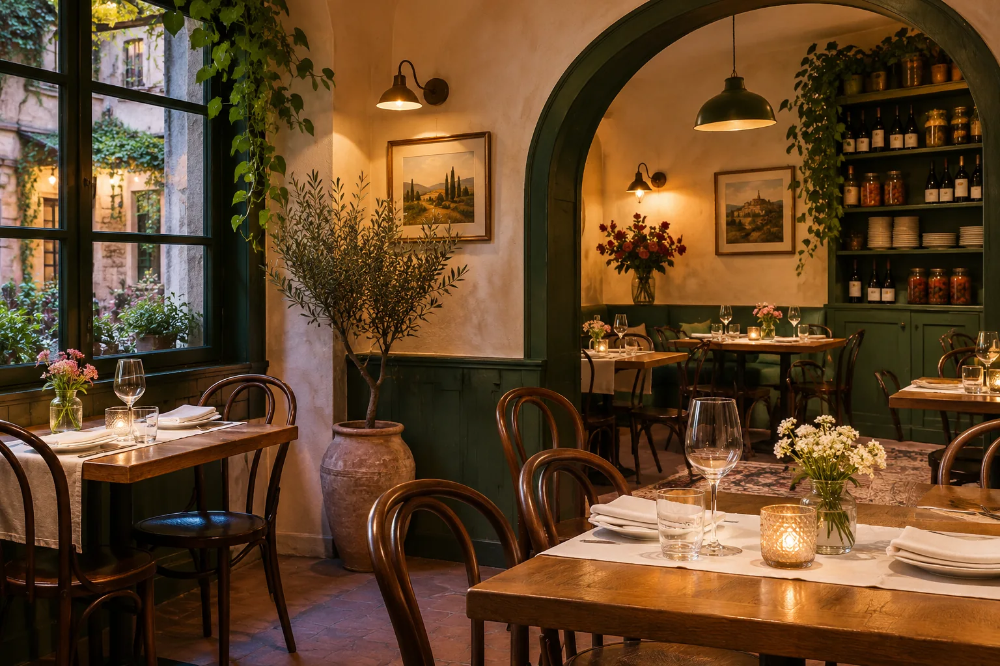

Risotto al parmigiano
Crema morbida, timo fresco e una mantecatura gentile.
€ 16prezzo demo

DEMO Cucina italiana contemporanea
Una cucina di gesti familiari, ingredienti di stagione e tavoli che invitano a restare.

La stagione detta il ritmo.La cucina Materia e gesti
Ogni piatto comincia da ciò che la stagione offre davvero: materie prime riconoscibili, lavorazioni attente e ricette che lasciano parlare il sapore.
La tradizione è una guida, non una formula. Pasta fresca, cotture pazienti e piccoli dettagli costruiscono una cucina italiana fatta per essere condivisa.
Dalla cucina Piatti della casa
Una piccola selezione di piatti dimostrativi. Il menu cambia con la stagione e i prezzi sono da confermare.

Crema morbida, timo fresco e una mantecatura gentile.

Sfoglia sottile, burro, salvia e ricotta delicata.

Crema soffice, caffè e cacao amaro.
Prezzi puramente dimostrativi · da verificare e confermare con il ristorante.

La nostra storia Ospitalità
Il pane al centro, un piatto che passa di mano, il tempo che si allunga tra una portata e l'altra. Una casa si riconosce prima dai gesti che dai racconti.
Questo testo è dimostrativo. Qui il ristoratore aggiungerà persone, luoghi e passaggi autentici della propria storia.
Vieni a trovarciGallery Dentro Lumina
Ingredienti, mani al lavoro e dettagli della tavola. Tocca una fotografia per vederla più da vicino.
Prenotazioni Il tuo tavolo
Dicci quando vorresti venire. In questa demo la richiesta non viene inviata e nessun tavolo è confermato: collega qui il servizio di prenotazione del ristorante.
Modulo dimostrativo · non invia i tuoi dati
Contatti Visita
Qui trovi le informazioni essenziali. Indirizzo, recapiti e orari sono segnaposto dimostrativi da sostituire prima della pubblicazione.